1.5 GUI
The GUI is an easy and intuitive way to interact with the program. The
GUI mode is often referred to as interactive mode. The GUI allows to perform
an analysis interactively with little or no knowledge of individual commands.
Each GUI option activates one or more commands to perform the requested
operation. Most operations can be performed interactively, but some
operations are available only by entering commands in the command input
area or via a batch file. The program records all commands issued in the
input history file (Jobname.LOG).
ANSYS can be run through the GUI and commands input window, or
by creating an ASCII text file for input, or both. It is often more desirable to
use a combination of both graphical methods and input files. An input file is
often useful for defining the initial model geometry, characteristics, and
constraints. This is because the input file can be easily changed to correct the
errors that are inevitable when setting up a new ANSYS model. Once the
input is correct and the model geometry and material characteristics are read
into ANSYS, it is then desirable to examine the results using either direct
command input with the command input window, or the graphical menu
selections.
1.5.1 GUI Components
Dialog boxes are used to provide input for a particular function. The
type of dialog box provided depends on the type of input required. The input
might require any of the following: text entry box, check button, radio button,
option button, single-selection list, multiple-selection list, two-column
selection list, a tabbed box, or a tree structure. Other components of a dialog
box include action buttons such as OK, Apply, and Cancel.
1.5.1.1 Text Entry Boxes
In a text entry box (Fig. 1.7) numbers or character strings are
entered. If text already exists in the text entry box, overwrite it by
highlighting the existing text. Press and drag the left mouse button to
highlight existing text. Double-clicking the left mouse button on a word
highlights the word, and triple-clicking it highlights the entire string.
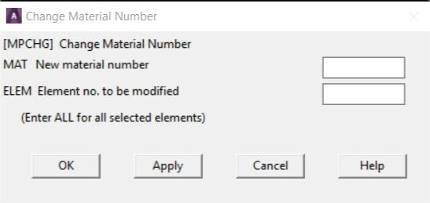
Fig. 1.7 Text Entry Box
1.5.1.2 Check Buttons
Check buttons are square buttons that enable or disable features. Click
on it with the left mouse button to change a check button from ON to OFF or
vice versa. The buttons under "Preferences for GUI Filtering" (Fig. 1.8) are
check buttons.
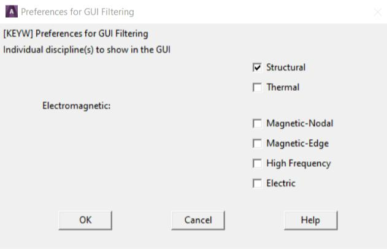
Fig. 1.8 Check and Radio Buttons
1.5.1.3 Radio Buttons
Radio buttons are diamond shaped buttons used to select one of
several options. One button is always "On" in a set of radio buttons. Clicking
on the desired item makes that button active and turns off other buttons. The
buttons shown under "Structural discipline options" (Fig. 1.8) are radio
buttons.
1.5.1.4 Option Buttons
With option buttons (Fig. 1.9) the analyst selects an item from a pop-
up menu that collapses into one button showing the active choice. Adopt the
following procedure to select a different option:
1. Place the cursor on the button
2. Press the left mouse button and hold it
3. Drag the mouse through the pop-up menu until the desired item is
highlighted.
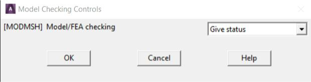
Fig. 1.9 Option Buttons
1.5.1.5 Single-Selection Lists
A single-selection list (Fig. 1.10) is used to select one option from a
scrollable list. Clicking on the desired item highlights it and copies it to the
Selection box, where it can be edited.
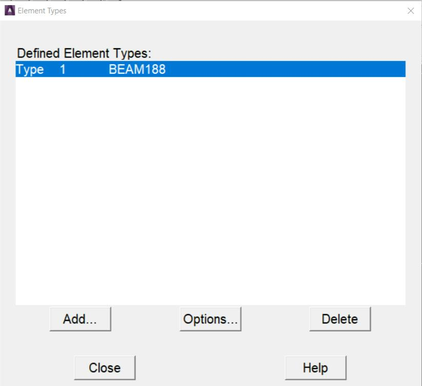
Fig. 1.10 Example of a Single-Selection List
1.5.1.6 Multiple-Selection Lists
A multiple-selection list (Fig. 1.11) is used to select items from a list. It
resembles the single-selection list except that there is no Selection box, and
more than one item can be selected. Clicking on an item highlights and makes
it active, and clicking the same item again deactivates it.
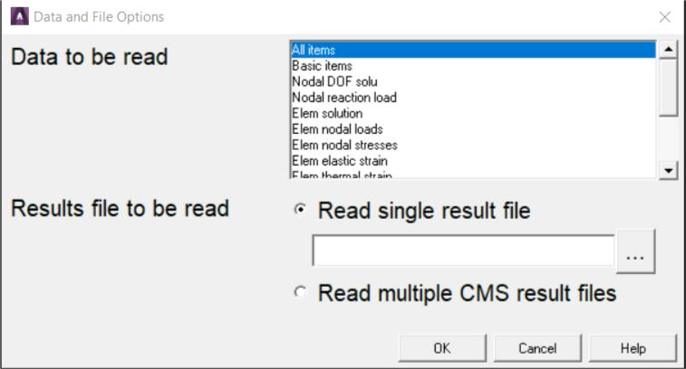
Fig. 1.11 Multiple-Selection List
1.5.1.7 Two-Column Selection Lists
One of several choices can be selected from a two-column selection list
(Fig. 1.12). It resembles the single-selection list except the choices are
grouped into categories. Select a category from the left column, then pick the
desired item from the right column. Choices available in the right column vary
according to the choice in the left column.
The GUI displays this type of list primarily when it is necessary to
select from a large number of items.
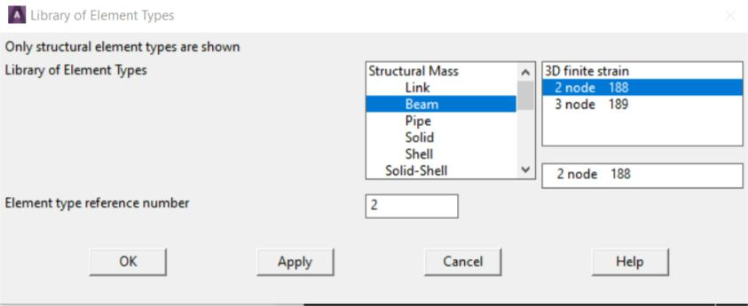
Fig. 1.12 Two-Column Selection List
1.5.1.8 Tabbed Dialog Boxes
A tabbed dialog box (Fig. 1.13) presents groups of related commands
in one location. Select an individual tab by clicking on it, or by
using Ctrl+Tab to move between the tabs. Some tabbed dialog boxes require
that the analyst navigates through each tab sequentially, with later tabs
“grayed out” until s/he completes required tasks in an earlier tab.
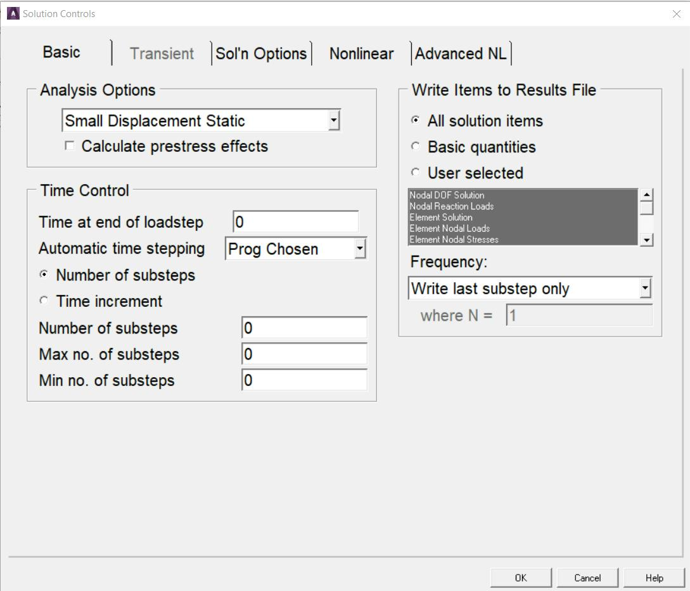
Fig. 1.13 Tabbed Dialog Box
1.5.1.9 Drop-Down List Boxes
A drop-down list box (Fig. 1.14) provides a list of choices for an option.
Make a selection by clicking on the small arrow on the right side of the list
box and then scrolling to and clicking on the desired choice from the list.
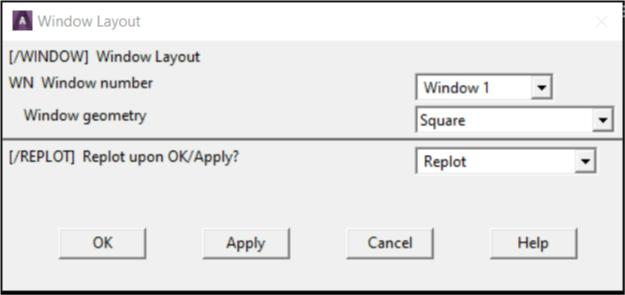
Fig. 1.14 Drop-Down List Box
1.5.1.10 Tree Structures
A tree structure (Fig. 1.15) presents a hierarchical flow of logical
choices from major categories to specific subcategories. Select a major
category by double-clicking on the category. Subcategories appear listed
vertically and indented beneath that major category. If a subcategory is
selected in the same way, further subcategories are listed, and become more
specific. Continually selecting subcategories yields the final item in the
“branch” of the tree. At this point, instead of a categorical choice, enter or
edit data to provide specific input.
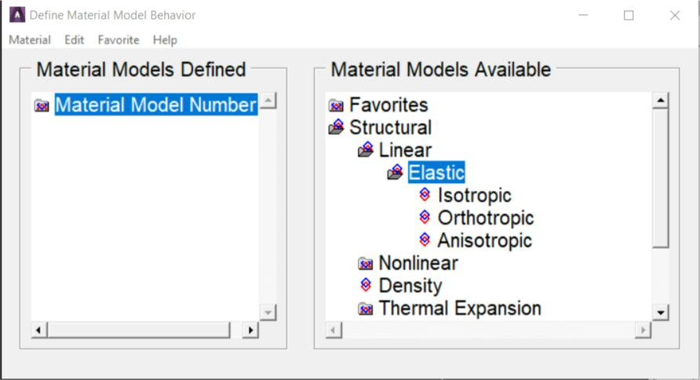
Fig. 1.15 Tree Structures
Double-click on the name of the final item to display a data input
dialog box (Fig. 1.16) where the data is entered or edited.
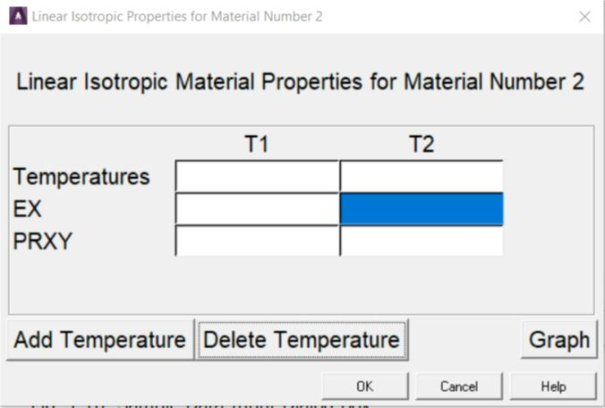
Fig. 1.16 Sample Data Input Dialog Box
1.5.1.11 Using Action Buttons
A dialog box typically contains combinations of the following action
buttons:
- OK - Applies the changes and closes the dialog box.
- Apply - Applies changes but does not close the dialog box. Use this
button when it is necessary to make more than one change within a
dialog box, or when it is necessary to execute a function more than
once.
- Reset - The settings in the dialog box revert to the previous or default
settings.
- Cancel - Closes the dialog box without applying any changes made.
The difference between Cancel and Reset is that Reset does not
close the dialog box.
- Help - Displays help information for the function being performed.
1.5.2 Layout of the GUI
If the analyst enters the program through the launcher, the GUI is
activated automatically for interactive running. The GUI (Fig. 1.17) has seven
areas:
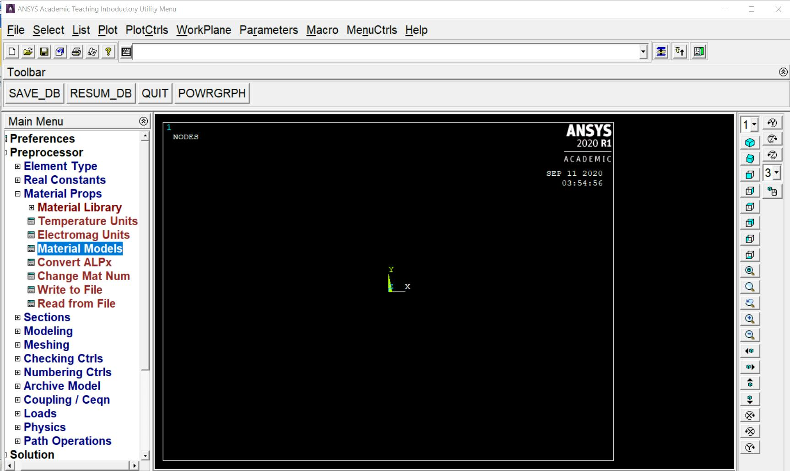
Fig. 1.17 The Program GUI replace
1. Utility Menu - Contains functions that are available throughout the
ANSYS session, such as file controls, selections, graphic controls and
parameters. The analyst can also exit the program through this menu.
2. Standard Toolbar - Contains push buttons that execute commonly
used ANSYS commands. More push buttons can be added if desired.
3. Command Input Area - Shows program prompt messages and
allows analyst to type in commands directly.
4. Main Menu - Contains the primary ANSYS functions, organized by
preprocessor, solution, general postprocessor, design optimizer. It is
from this menu that the vast majority of modelling commands are
issued.
5. Graphics Window - The Graphic Window is where graphics are
shown and graphical picking can be made. It is here where analyst will
graphically view the model in its various stages of construction and the
ensuing results from the analysis.
6. Status and Prompt Area - located at the bottom of the GUI, shows
prompts and the status of the analysis. Typically, prompts for functions
that involve graphical picking will be seen. Be sure to read the prompt
so the proper entities can be picked in the proper order. This area also
contains status information.
7. Output Window - The Output Window (Fig. 1.18) shows text output
from the program, such as listing of data etc. It is usually positioned
behind the main window and can be put to the front if necessary.
The GUI is fairly easy to use. There is some terminology related to
basic operation:
Resume: Resume opens a previously saved database. Resuming a
database doesn’t change the jobname. For example: start ANSYS with
a jobname of file. Then resume example.db, do some work, then save.
That save is done to file.db! This can be avoided by always resuming
using the 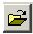icon on the toolbar. If example.db is opened using this
method, it resumes the model and automatically changes the jobname
to example.
Plotting: Contrary to the name, this has nothing to do with sending an
image to a plotter or printer. Plotting in ANSYS refers to drawing
something in the graphics window. Plot one type of entity (lines,
elements, etc.) to the screen at a time. To plot more than one kind of
entity use, “Plot > Multiplot”, which by default will plot everything in
the model at once.
Plot Controls:his refers to how the “plot” has to look on the screen
(shaded, wireframe, entity numbers on or off, etc). Other plot control
functions include sending an image to a graphics file or printer.
Raise hidden: If a dialog box disappears behind the main window, bring
it back with this.
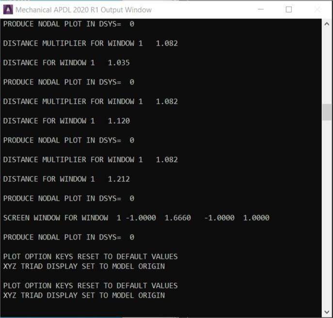
Fig. 1.18 Output Window
The analyst can resize the toolbar, Main Menu and Graphics Window,
as well as the GUI. In order to resize the areas in the GUI, drag the borders
around the areas of the GUI while holding down the left mouse button.
In order to change the overall size of the GUI, position the mouse on
of the corners of the GUI and drag it diagonally towards the center of the GUI
while holding down the left mouse button. Save the GUI size settings by
selecting Utility Menu> MenuCtrls> Save Menu Layout.
The GUI iconified. Later to completely remove the program from the
screen without terminating the session, the session can be brought back by
restoring the icon. The remainder of this section describes each of the areas
of the GUI.
1.5.2.1 The Utility Menu
The Utility Menu contains utility functions such as file controls,
selecting, graphics controls, and parameters. Most of these functions can be
executed anytime during the session. For example, while picking locations on
the working plane to create keypoints, the analyst can select Utility Menu>
PlotCtrls> Pan-Zoom-Rotate> Iso to change the view to an isometric view.
Each menu topic on the Utility Menu brings up a pull-down menu of
subtopics, which in turn either cascade to a submenu (indicated by a >) or
perform an action. The action may do any of the following:
- Immediately execute a function
- Bring up a dialog box (indicated by a ...)
- Bring up a picking menu (indicated by a +).
Figure 1.19 shows the pull-down list of subtopics seen when
the List topic is selected:
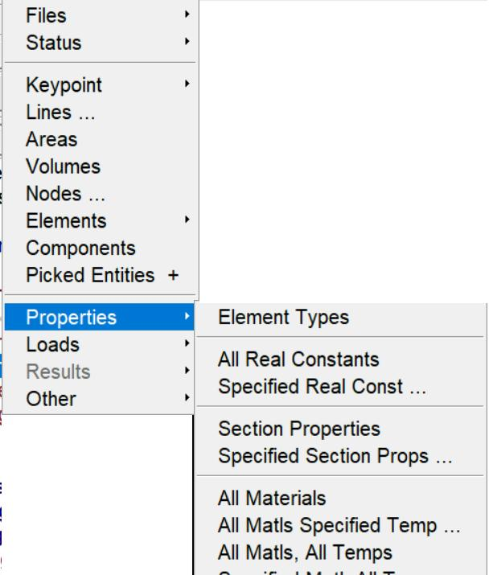
Fig. 1.19 Example of a Pull-Down, Cascading Menu
Left mouse button is used to "pull down" a menu topic on the Utility
Menu. Pressing and dragging the mouse button permits to move rapidly to
the desired subtopic. Releasing the mouse button while it is on an "action"
subtopic causes the program to perform that action. Clicking the left mouse
button leaves the pull-down and cascading menus in place. The menus
disappear when the analyst clicks on an action subtopic or elsewhere in the
GUI.
Use the keyboard to pull down a menu topic and move to the desired
function. Do so via the menu's mnemonic character, indicated by an
underscore. Simply place the mouse cursor anywhere in the Utility Menu and
press the ALT key and the mnemonic character simultaneously. For example,
pressing ALT+F with the mouse cursor anywhere in the Utility Menu pulls
down the File menu, since F is the mnemonic (indicated by the underscore
in File).
Once the pull-down menu appears, the analyst can use the other
mnemonic characters (without the ALT) or the arrow keys on the keyboard to
navigate to the desired menu topic and the ENTER or RETURN key to "pick"
it.
The Utility Menu lists 10 topics. A brief description of each topic
follows.
- File - Contains file and database related functions, such as clearing the
database, saving it to a file, and resuming it from a file. Some of the
functions under the File menu are valid at Begin level only. If the
analyst selects such a function when not at Begin level, s/he will see a
dialog box giving a choice of moving to Begin level and executing the
function or cancelling the function.
- Select - Includes functions that allow to select subsets of entities and
to create components.
- List - Enables to list virtually any data item stored in the database. The
analyst can also obtain status information about different areas of the
program and list the contents of files residing on the system.
- Plot - Plots keypoints, lines, areas, volumes, nodes, elements, and
other data that can be graphically displayed.
- PlotCtrls - Includes functions which control the view, style, and other
characteristics of graphics displays.
- The Hard Copy function helps in obtaining hard copies of the entire
screen or just the Graphics Window.
- WorkPlane - Enables to toggle the working plane on or off and to
move, rotate, and otherwise maneuver the working plane. The analyst
can also create, delete, and switch coordinate systems by using this
menu.
- Parameters - Includes functions to define, edit, and delete scalar and
array parameters.
- Macro - Allows to execute macros and data blocks. The analyst can
also create, edit, and delete abbreviations, which appear as push
buttons on the Toolbar.
- MenuCtrls - Permits to create, edit, and delete abbreviations on the
Toolbar Once the analyst adjusts the GUI to her/his liking, s/he can
use the Save Menu Layout function to save the current GUI
configuration.
1.5.2.2 The Standard Toolbar
The Standard Toolbar (Fig. 1.20) contains a set of icon buttons that
execute commonly -used functions.
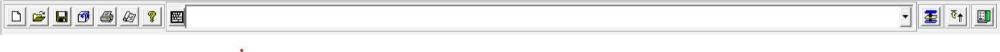
Fig. 1.20 Standard Toolbar
By default, the Standard Toolbar is loaded and positioned when the
analyst starts ANSYS. The Standard Toolbar is defined at start up, and cannot
be modified during the session. The standard buttons and their functions
include:
- New Analysis: Saves and clears information for the existing analysis and
starts a new analysis.
- Open File: Reads database or input files to be read into ANSYS. The file type
determines the operation.
- Save Analysis: Saves the current analysis to a database file.
- Pan-Zoom-Rotate: Opens the Pan-Zoom-Rotate dialog box.
- Image Capture: Opens the image capture GUI.
- Report Generator: Opens the report generator GUI.
- Help: Displays the table of contents for the HTML-based help.
- Raise Hidden: Raises hidden windows to the top of the application.
- Reset Picking: Resets the picking menu if it becomes unresponsive or does
not appear when invoked via a menu pick or a command in the Input
Window.
- Contact Manager: Opens the Contact Manager GUI.
1.5.2.3 Command Input Options
Although the GUI provides intuitive graphical access, the analyst can
provide input to the program by typing in commands, even while the GUI is
active. There are two modes available for directly entering commands during
the analysis. The Single Line Input Window displays only one line and uses a
drop-down window to display the command history. The Command Window
can be used for more intensive command operations, such as pasting in
multiple command strings or copying longer strings and selected commands
from the history window. Both modes are described below.
The Single Line Input Window
The Input Window (Fig. 1.21) is the default display for all GUI
operations. The Input Window is used to conveniently enter single
commands. It is also used to access the history buffer without changing the
overall configuration of the GUI. As commands are entered into the Input
Window, dynamic command help appears in a box above the window. As the
analyst types the letters, the command help displays the possible commands,
and guides through the proper spelling and syntax of the command.
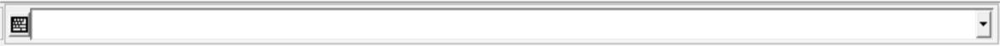
Fig. 1.21 Single Line Input Window
The history buffer contains all previously entered commands. Individual
lines from the history buffer can be displayed in the Input Window and
indexed with the up or down arrow keyboard keys. Once displayed in the
window, the analyst can edit the entry and execute it by using the return key.
View and access the history buffer by clicking the down arrow on the
right of the text entry box. A drop down list containing the entry history
appears. Clicking the left mouse button on any line in the history buffer
moves that line to the text entry box where the analyst can edit and execute
it. A double click on any line in the history buffer automatically executes that
line.
The vertical scroll bar at the right corner of the (unhighlighted) history
buffer box allows to scroll through the history buffer. The up and down arrow
keys can also be used to navigate the history buffer.
The Floating Command Window
Bring the Floating Command Window (Fig. 1.22) up by clicking on the
keyboard icon at the left side of the Single Line Input Window. The Command
Window is a floating window that can be resized and positioned easily for
more complex command entry operations. When the command window is
closed, all the operations will appear in the history buffer.
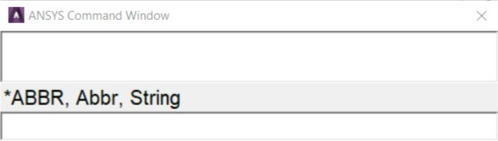
Fig. 1.22 The Floating Command Window
When the command history is accessed with the command window,
select commands from the buffer, and selectively enter them into input line,
in any order of selection. Do this by holding down the Ctrl key and clicking on
each command. As this is done, the commands appear in the input line
below. Then edit the commands, changing parameters or syntax, before
hitting enter to execute them.
The size and location of the Floating Command Window can be set to
the desired orientation. Then use the “Save Menu Layout” feature to make it
default. The Single Line Window will be available when the Command Window
is closed, but will no longer be the default.
The Command Window provides a scrollable, editable text area where
individual commands can be entered or pasted in long command strings.
Multiple commands can also be selected from the history buffer area, either
using the shift key to select large contiguous portions of the history, or the
control key to select multiple, individual commands. Like the Input Window,
dynamic command help is available; as command is typed, the probable
command is displayed. This display shows the complete command syntax,
and stays visible so that the help system can be checked.
1.5.2.4 The Toolbar
The Toolbar (Fig. 1.23) is a convenient area where push-buttons can
be added for command, function and macro shortcuts. The Toolbar is a set of
push buttons that execute commonly used functions. The toolbar can be set
up to provide one-button access to the favorite and frequently used functions.
It is loaded and positioned by default, and can be modified during the
session. Some push buttons are predefined, but all others are to be defined
by the analyst. That is, the analyst selects how many push buttons the
Toolbar contains (to a maximum of 100) and what functions they execute.
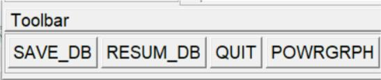
Fig. 1.23 The Toolbar
Adding Buttons to the Toolbar
Additional push buttons are added to the Toolbar by creating
abbreviations. An abbreviation is simply an alias (up to 32 characters long) for
a complete command or GUI function name. For example, SAVE_DB is an
alias for the SAVE command and RESUM_DB is an alias for the
RESUME command. Macros can also be added to the Toolbar by defining an
abbreviation that executes the macro.
Creating Abbreviations
Select Utility Menu> MenuCtrls> Edit Toolbar or Macro> Edit
Abbreviations to create an abbreviation. Both menu choices bring up the
"Edit Toolbar/Abbreviations" dialog box shown in Fig. 1.24. The Toolbar
immediately reflects any changes the analyst makes to the abbreviations
using this dialog box.
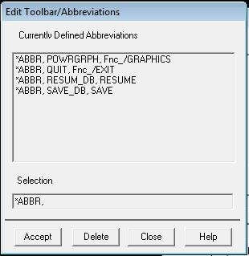
Fig. 1.24 Edit Toolbar / Abbreviations Dialog Box
An abbreviation can also be created by issuing the *ABBR command
from the Input Window. In this method, it is necessary to update the Toolbar
manually by picking Utility Menu> MenuCtrls> Update Toolbar. The Toolbar
can be sized to make it smaller or larger to fit the set of abbreviations.
The order in which abbreviations are defined determines the placement
of the buttons on the Toolbar. After defining the buttons, they cannot be
rearranged graphically within the GUI.
Buttons that execute commands or functions from a processor other
than the current one will not work. For example, if the analyst is in PREP7 and
picks a button for a POST1 command, s/he will receive an "unrecognized
PREP7 command..." warning.
After creating own set of abbreviations in the Toolbar, the analyst can
save them in a file by choosing either Utility Menu> MenuCtrls> Save
Toolbar or Utility Menu> Macro> Save Abbr. Pick either Utility Menu>
MenuCtrls> Restore Toolbar or Utility Menu> Macro> Restore Abbr to
restore a set of abbreviations from a file.
1.5.2.5 Main Menu
The Main Menu (Fig. 1.25) is where the analyst begins the analysis. It
contains the analysis functions used to create the model. The Main Menu is
arranged in a tree structure. This structure has progressive submenus
accessible as the analyst proceeds through the steps of the analysis. Each
menu topic in the main menu either expands to show more menu options
(indicated by a boxed +) or performs an action (indicated by an icon
preceding the menu topic). Click on the boxed + or the topic name to expand
a menu topic to reveal the subtopics (the boxed + will turn into a boxed -).
Continue expanding subtopics (also indicated by a boxed +) until the desired
action is reached. The action name is preceded by an icon used to indicate
the action:
- A square for a dialog box
- An arrow for a picking menu.
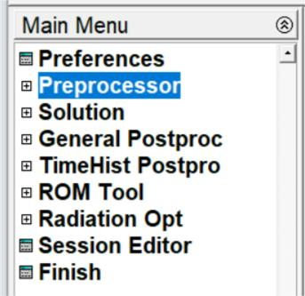
Fig. 1.25 Main Menu
Using Preferences to Set Menu Content
One of the most useful customizations that can be performed from the
GUI is to apply filtering to the menu choices. Filtering lets grey out, or
completely hide many of the functions the analyst determines s/he won’t
need during the analysis. Use the preferences dialog box to adjust the
filtering.
At the start of the program, no filtering is applied. Menu choices for all
analysis disciplines are displayed. Menu items that are not applicable are
grayed out, based on the context of the analysis. The grayed out items can
be removed by choosing the appropriate discipline from within the
“Preferences for GUI Filtering” dialog box. Not all menu options may be visible
during the analysis. If the desired option is not available, check the
preferences and element types.
For example, selecting Thermal suppresses structural, magnetic, and
fluid element types in the “Element Types” dialog box, displacements, and
potentials, etc. In the “Apply Loads” and “Delete Loads” menus, and so on.
Another item is the methodology used for structural analysis: h-method or LS-
DYNA Explicit. By default, the program uses h-method. The analyst can also
change the menu hierarchy and customize it to her/his needs by using the
User Interface Design Language (UIDL), an ANSYS-developed GUI language.
Additional Usability Features
On opening a Main Menu topic, the submenus stay in place until the
analyst selects a different Main Menu topic. If a menu topic is not seen, scroll
up or down in the Main Menu area until it is found or click the boxed – to
collapse subtopics that are no longer in use.
Individual topics in the Main Menu can be completely expanded to
reveal each and every subtopic. Right-mouse click context-sensitive control is
available within the Main Menu to expand and collapse the individual topics.
Once an individual subtopic is completely expanded, the analyst can
selectively close topics to have areas at different locations under each main
topic expanded. As s/he does so, the amount of expansion accessed is
recorded and replicated in the next time.
Menus can be set to automatically collapse and expand the subtopics.
Use the “Collapse Siblings” feature (found in the right-mouse click menu) to
set the menu expansion preferences. When collapse is selected, the subtopics
opened automatically collapse when another main topic is selected.
When many submenus are open, navigating the main menu can
become confusing, especially when individual submenus are large enough to
push the heading out of the viewing area. The Preprocessor subtopic alone
has more than 800 nested subheadings beneath it. Use the same right-mouse
click context-sensitive control to configure the main menu for selectable
contrasting color display within each nested level. Designate any color for the
menu text at each level, making the transition between levels easily
detectable. This makes navigating within a subtopic, and up to higher levels
much easier.
Main Menu Analysis Functions
Most of the functions in the main menu are “modal” with respect to
each other; that is, the analyst must complete one function before starting
the next. For example, for creating keypoints on the working plane, s/he
cannot simultaneously create lines or mesh volumes. However, s/he can
define or edit scalar parameters in the middle of creating keypoints since
parameter functions are “modeless” Utility Menu functions.
The Main Menu functions will vary according to the product and type of
analysis. The following functions are included in the default, non-filtered Main
Menu:
- Preprocessor – Enters the modelling processor and contains PREP7
functions such as modelling, meshing, and loads.
- Solution – Enters SOLUTION and contains SOLUTION functions
such as analysis type and options, loads, load step options, and
solution execution.
- General Postproc – Enters the general postprocessor and
contains POST1 functions such as plotting and listing of results.
- TimeHist Postpro – Enters the time-history postprocessor and
loads the Time History Variable Viewer. Contains POST26 functions
such as defining, listing, and plotting of variables.
Additional Main Menu Utilities
The default main menu also contains the following dialog boxes that
are available at any time during the analysis:
- Session Editor – Opens the session editor
- Finish – Exits the current processor and moves to the Begin level by
executing the FINISH command.
1.5.2.6 The Graphics Window
The Graphics Window is where all graphics displays are drawn and all
graphical picking is done. It is usually the largest of the GUI windows.
Maintain the 4:3 width-to-height proportion while changing the size of the
Graphics Window. Graphics displays are drawn in the Graphics window when
a plot is requested. In addition, graphics displays that are generated by
immediate mode and XOR mode will be seen.
Immediate Mode
An immediate mode plot is one that is drawn automatically when the
analyst creates, moves, reflects, or otherwise manipulates the model. It is
only a temporary graphics display meant to give immediate feedback on the
function just executed. As a result, an immediate mode plot has two
drawbacks:
1. It will be destroyed if a menu or a dialog is brought up on top of it or if
the GUI is iconified and restored.
2. Its scaling is based on the scaling for the last plot request, so if the
new entity lies “outside”the boundaries of that scaled image, it will not
appear in the Graphics Window. Issue a plot request to see the new
entity.
Numbers and symbols drawn in immediate mode have a similar
drawback: they will disappear when a plot is requested unless they are
explicitly set to “on” via the appropriate functions under the PlotCtrls menu.
Immediate mode can be turned off using the Immediate Display function
under Utility Menu> PlotCtrls> Erase Options.
If a plot is requested “manually”, the program calculates the graphics
scaling such that the display fills the window. This is more of a
“permanent” display in that it stays in place even if it is obscured by a dialog
box or a menu or if the Graphics Window is iconified and then restored.
XOR Mode
The program uses this mode when something needs to be drawn or
erased quickly without destroying whatever is currently being displayed in the
Graphics Window. For example, XOR mode takes effect during graphical
picking to highlight or unhighlight the item being picked. It is also used to
display the working plane and for rubber-banding.
The advantage of using XOR mode is that it produces an instantaneous
display without affecting the existing plot on the screen. The only drawback is
that drawing in the same location a second time erases the display. For
example, picking the same node or keypoint a second time erases the
highlight. Similarly, with the working plane display on, requesting another plot
without erasing the screen erases the working plane.
Capture Image Feature
A useful feature that permits to create “snapshots” of the Graphics
Window is the Capture Image function (using the Capture Image button in
the Standard Toolbar or Utility Menu> PlotCtrls> Capture Image). After an
image is captured, it can be saved to a file and then restored in any session.
Captured images are useful for comparing different views, sets of results, or
other significant images simultaneously on the screen.
Mouse Functionality
Pressing the scroll wheel button (Fig. 1.26) is the same as a middle
mouse button.
Picking Entities:
Left Button: Picks an entity. Picking is cumulative, so it is not necessary to
press control or shift to pick more than one entity. Click and hold the button,
then move the cursor around until the entity under consideration is
highlighted. When the button is released the highlighted entity will be
selected.
Middle Button: Completes a selection. This is like clicking “Apply” in the
picking dialog (also called “the picker”).
Right Button: Toggles back and forth between “pick” and “unpick” mode.
Cursor changes indicating what mode ANSYS is in.
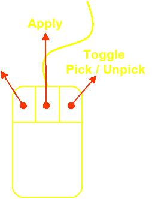
Fig. 1.26
Manipulating the Model View: (these defaults can be changed to different
buttons if desired)
CTRL + Left Button: Pans the model side to side and up and down.
CTRL + Middle Button: Moves the mouse left and right to rotate about screen
Z. Up and down zooms in and out.
CTRL + Right Button: Rotates the model.
Right Button: Click and drag the right button to zoom in using a window.
Rolling the scroll wheel also zooms in and out.
When the right button is clicked in the graphics area a pop-up menu
with some very common graphics functions appears (Fig. 1.27) . ANSYS does
not always refresh the graphics screen so Replot is very handy. Fit makes the
whole model visible. Zoom Back will go back to the view the way it was just
before zooming in. Along with some of the standard Pan-Zoom-Rotate
functions, the analyst can also access many of the window control functions
found in the PlotCrtrls section of the Utility Menu. Placing the cursor over the
legend areas of the Graphics Window channels the context to access the
legend control menus.
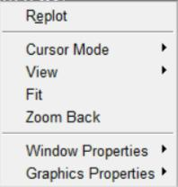
Fig. 1.27 Right Button Pop-up Menu
1.5.2.7 The Output Window
The Output Window (Fig. 1.18) receives all text output from the
program - command responses, notes, warnings, errors, and any other
messages. It is usually positioned behind the GUI, but it can be raised to the
front when necessary.
Sizing and Positioning the Output Window on Windows Systems
The size and position of the Output Window can be saved using:
1. Move the window to the desired location
2. Size the window to the desired dimensions
3. Select Utility Menu> MenuCtrls> Save Menu Layout.
1.5.2.8 Creating, Modifying and Positioning Toolbars
When a session is begun, the start up routine reads a number of text
files and scripts that set parameters and conditions for the session. Many of
these files can be modified to provide a more customized level of operation.
The start160.ans file is one such file. Call up toolbars, set their position
and define their content in a similar fashion.
1.5.2.9 Help System
Much of the ANSYS documentation is available on-line. Type help,
command to get help on any command. Another option to get help is to
select HELP on the menu bar at the top of the screen. Information about the
commands, theory, and element types used by ANSYS can be viewed in Fig.
1.28.
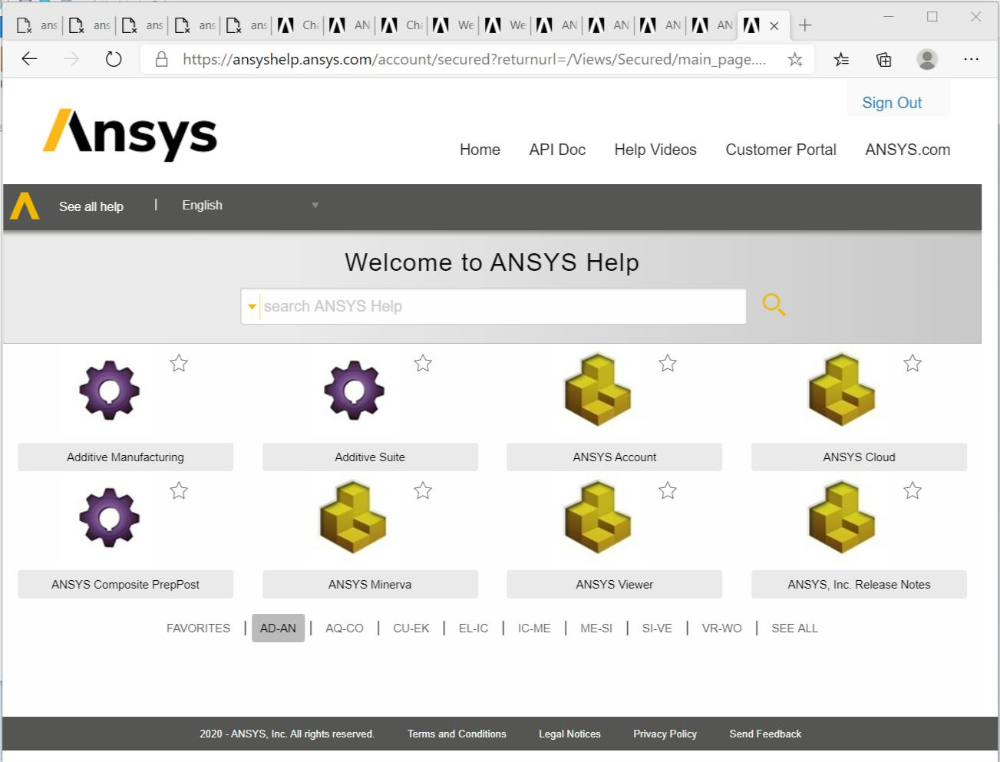
Fig. 1.28 Help system